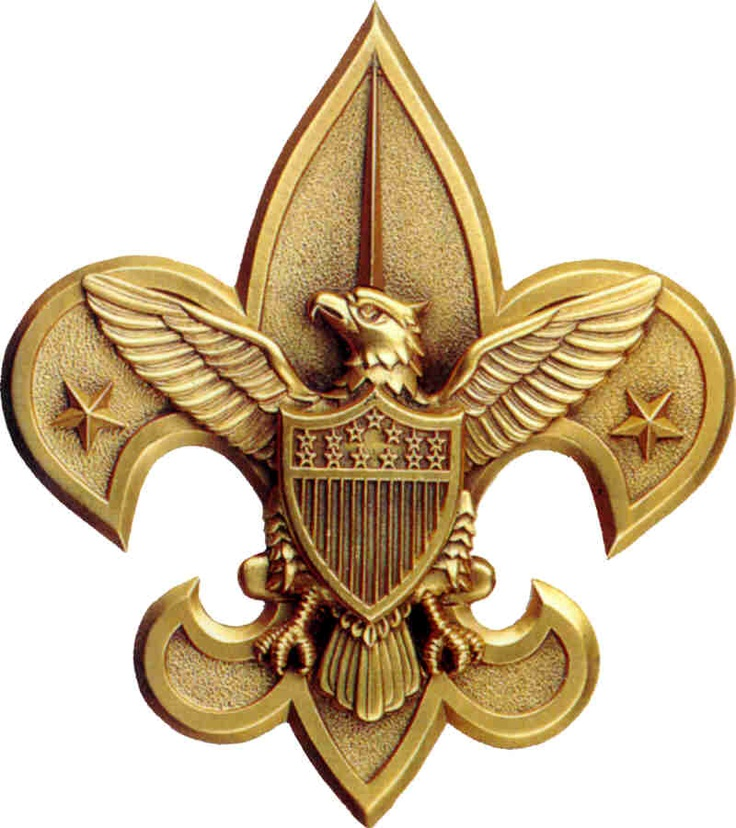
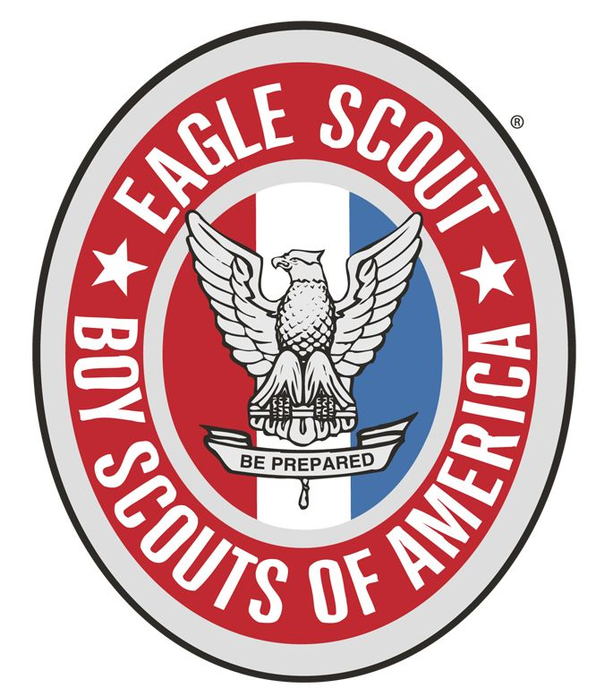

Guide to Boards of Review
Scouts BSA Troop 2 (Chartered 1921)
Boy Scouts of America
Michigan Crossroads Council
West (President Ford Service Area)
Chief Okemos District
Revised 2022 to have just an Eagle Scout BoR page
Purpose of a Board of Review:
The members of a Board of Review should have the following objectives in mind:
- To make sure the Scout has completed the requirements for the rank.
- To see how good an experience the Scout is having in the unit.
- To encourage the Scout to progress further.
Additionally, the Board of Review provides "quality control" on advancement within the unit, it provides an opportunity for the Scout to develop and practice those skills needed in a interview situation, and it is an opportunity for the Scout to review their accomplishments.
The Board of Review is NOT a retest; the Scout has already been tested on the skills and activities required for the rank. However, the chairman of the Board of Review should ensure that all the requirements have been "signed off" in the Scout's handbook. Additionally, the chairman should ensure that leadership and merit badge records are consistent with the requirements for the rank.
* * The Board of Review is an opportunity to review of the Scout's attitudes, accomplishments and their acceptance of Scouting's ideals. * *
Composition of a Board of Review:
For all ranks (except Eagle) and Eagle palms, the Board of Review consists of three to six members of the Troop Committee. The Troop Advancement Chairperson typically acts as the chairperson of the Board of Review. Relatives or guardians may not serve as members of a Scout's Board of Review. Unit leaders (Scoutmaster, Assistant Scoutmasters, Varsity Coach, Post Advisor, etc.) should not participate in a Board of Review unless absolutely necessary.
For the rank of Eagle, the Board of Review consists of three to six members drawn from Scouting and the community. The members of the Board of Review are selected by the District Advancement Committee; at least one member of the District Advancement Committee must be a member of the Board of Review for Eagle, and serves as chairperson of the Board of Review. Unit leaders from the Scout's unit, relatives, or guardians may not serve as members of a Scout's Board of Review for Eagle. A Board of Review for Eagle may contain members of the community who are not registered Scouters; however, they should be knowledgeable of the principles of Scouting. For example, a representative from a chartering organization, an adult Eagle Scout (even if not currently registered), or a religious leader are frequently asked to assist with an Eagle Board of Review. The Scout may request an individual to be a member of their Board of Review. As a general rule, no more than one member of an Eagle Board should be associated with the Scout's unit.
Mechanics of a Board of Review:
The Scout is introduced to the board.
The Scout should be in full uniform (local or unit custom may dictate regarding neckerchief and badge sash).
The Scout should be asked to come to attention, and recite one or more of the following:
- The Scout Law
- The Scout Oath
- The Scout Motto
- The Scout Slan
- The Outdoor Code
For the lower ranks, one or two (usually the Law and Oath) should be sufficient. For higher ranks, more may be expected. One or two re-tries are appropriate, especially for younger Scouts, or if the Scout appears nervous.
The board members are invited to ask questions of the Scout (see the sections appropriate to each rank). The questions should be open-ended, offering an opportunity for the Scout to speak about their opinions, experiences, activities, and accomplishments. Avoid questions which only require a simple one or two word answer. If an answers is too brief, follow up with a, "Why?" or, "How can that be done?" to expand the answer. The questions need not be restricted to Scouting topics; questions regarding home, church, school, work, athletics, etc. are all appropriate. The Chairperson should be made aware of any "out-of-bounds" areas; these should be communicated to the board before the Board of Review begins (e.g., if a Scout is experiencing family difficulties due to a divorce, it would be prudent to avoid family issues.)
The time for a Board of Review should be from 15 to 30 minutes, with the shorter time for the lower ranks. When all members have had an opportunity to ask their questions, the Scout is excused from the room. The board members then consider whether the Scout is ready for the next rank; the board's decision must be unanimous. Once the decision is made, the Scout is invited back into the room, and the Chairperson informs the Scout of the board's decision. If the Scout is approved for the next rank, there are general congratulations and hand shakes all around, and the Scout is encouraged to continue advancing. If there are issues which prevent the Scout from advancing to the next rank, the board must detail the precise nature of the deficiencies. The Scout must be told specifically what must be done in order to be successful at the next Board of Review. Typically, an agreement is reached as to when the Scout may return for their subsequent Board of Review. The Chairperson must send a written follow up, to both the Scout and the Scoutmaster, regarding the deficiencies and the course of action needed to correct them.
Mechanics of a Board of Review for Eagle Rank
The mechanics of a Board of Review for Eagle are similar to all other Boards of Review, except that a Board of Review for Eagle is more in depth, and might last as long as 45 minutes to an hour. Additionally, the Eagle Scout Rank Application, Letters of Recommendation (minimum of 3) and Eagle Project Notebook must be present and reviewed by the board. Questions about these documents are appropriate, but the letters of recommendation are for the board's use only; any comments or questions about them should not reveal who wrote the letters. The letters are retained by the District Advancement commitee member, and are never given to the Scout. After the application has been approved by National Eagle Board of Review and returned to the local council (typically 4-6 weeks), the letters of recommendation are destroyed.
The Nature of the Questions:
On the following pages are typical Board of Review questions for each rank. The questions for the lower ranks are simpler and generally deal with factual information about the Scout's participation in their unit, and their approach to applying the skills they have learned toward earning the next rank. The questions for the higher ranks are less factual, and generally seek to aid understanding of how Scouting is becoming an integral part of the Scout's life. Remember: it is not the point of a Board of Review to retest the Scout. However, questions like, "Where did you learn about ..." or "Why do you think it is important for a [rank] Scout to have this skill?" are valid.
If a Scout appears nervous or anxious about the Board of Review, it might be appropriate to ask one or two questions from the list for a lower rank, to help "break the ice" and establish some rapport. In general, within a rank, the questions are arranged from "easiest" to "most difficult".
For each rank, there is a question about advancing to the next rank. The purpose of this question is to encourage advancement, but it should not be asked in a way that pressures the Scout. [Note: If the Board of Review is for the Life rank, and the Scout is at or near their 17th birthday, some pressure towards Eagle may be in order. At the very least, be certain that the Scout realizes that their time is running out.]
For higher ranks, there is a question from The Scout Handbook about basic Scouting history.
For Order of the Arrow members, there are questions about the role of OA within Scouting.
More questions are provided than can typically be accommodated in the time suggested. The Board of Review will need to select the questions which are appropriate for the particular Scout and their experiences.
These questions are intended to only serve as a guide. Units should freely add to, or remove from, these lists as they feel appropriate.
What Every Scout Should Know
Every Scout should know the meaning of "Scout Spirit". They may have all kinds of answers, many of which are quite good. The real answer is, To live by the Scout Oath and Law. It is fair to ask at any rank, what is the meaning of Scout Spirit, what it means to them, how they demonstrates Scout Spirit in the Troop, at home, at school, etc.
Scout Oath:
On my honor I will do my best
To do my duty to God and my country
and to obey the Scout Law;
To help other people at all times;
To keep myself physically strong,
mentally awake, and morally straight.
|
Outdoor Code:
As an American, I will do my best to --
Be clean in my outdoor manners,
Be careful with fire,
Be considerate in the outdoors, and
Be conservation-minded.
|
Scout Law:
- A Scout is ...
- Trustworthy,
- Loyal,
- Helpful,
- Friendly,
- Courteous,
- Kind,
- Obedient,
- Cheerful,
- Thrifty,
- Brave,
- Clean,
- Reverent.
|
Scout Motto:
Be Prepared.
Scout Slogan:
Do a good turn daily.
|

Eagle Rank
The Board of Review for the Eagle Rank is different from the other Boards of Review in which the Scout has participated. The members of the Board of Review are not all from their Troop Committee. Introductions are essential, and a few "break in" questions may be appropriate.
At this point, the goal is to understand the Scout's full Scouting experience, and how others can have similar meaningful Scouting experiences. Scouting principles and goals should be central to the Scout's life; look for evidence of this.
Although this is the final rank, this is not the end of the Scouting trail; "Once an Eagle, always an Eagle". Explore how this Eagle Scout will continue with Scouting activities, and continued service to their home, church, and community.
The approximate time for this Board of Review should be 45 - 60 minutes.
Sample Questions:
- Who do you feel is responsible for your being before us today?
- What would you suggest adding to the Scout Law (a thirteenth point)? Why?
- What one point could be removed from the Scout Law? Why?
- Why is it important to learn how to tie knots, and lash together poles and logs?
- What is the difference between a "Hollywood hero" and a real hero?
- Can you give me an example of someone who is a hero to you? (A real person, not a character in a book or movie.)
- Why do you think that the Family Life merit badge is a required merit badge?
- What camping experience have you had, that you wish every Scout could have?
- Have you been to Philmont or a National (International) Jamboree? What was your most memorable experience there?
- What is the role of the Senior Patrol Leader at a troop meeting (campout, summer camp)?
- If you could change one thing to improve Scouting, what would you change?
- What do you believe our society expects from an Eagle Scout?
- The charge to the Eagle requires that you give back to Scouting more than Scouting has given to you. How do you propose to do that?
- As an Eagle Scout, what can you personally do to improve your unit?
- What will you be doing in your unit, after receiving your Eagle Rank?
- Tell us how you selected your Eagle Service Project.
- From your Eagle Service Project, what did you learn about managing or leading people? What are the qualities of a good leader?
- What part of your Eagle Service Project was the most challenging? Why?
- If you were to manage another project similar to your Eagle Service Project, what would you do differently to make the project better or easier?
- What are your future plans (high school, college, trade school, military, career, etc.)?
- Tell us about your family (parents, siblings, etc.). How do you help out at home?
- What do you think is the single biggest issue facing Scouting in the future?
- How do your friends outside of Scouting react when they learn that you are a Scout? How do you think they will react when they learn that you have become an Eagle Scout?
- Why did you want to become an Eagle Scout?
- What is a question you prepared for that we haven't asked?
- Why do you think that belief in God (a supreme being) is part of the Scouting requirements?
- How do you know when a Scout is "active" in their unit?
- You have been in Scouting for many years, sum up all of those experiences in one word. Why?
- What one thing have you gained from your Scoutmaster's conferences over the years?
- How does an Eagle Scout continue to show Scout Spirit?
- What does Reverent mean to you?
- If the Scout is a member of the Order of the Arrow:
What does OA membership mean to you?
How does OA help Scouting and your unit?
- Who brought Scouting from England to the United States? [Answer: William D. Boyce]
- What suggestions do you have for improving our Troop?
- [Traditional last questions] Why should this Board of Review approve your request for the Eagle Rank? or Why should you be an Eagle Scout?
|